TR
|
EN
|
DE
Händler-Login
>>
Passwort vergessen?
Neue Händleranwendung
Menu
Home
Produkte
Produktion
Unternehmen
Kontakt
Produktgruppen
GRÜNE OLIVEN
Angesch GRÜNE OLIVEN
mit Paprika GRÜNE OLIVEN
Geschlagen GRÜNE OLIVEN
Cocktail GRÜNE OLIVEN
Kernlos GRÜNE OLIVEN
SCHWARZE OLIVEN
In Lake Oliven
Sele Gruppe
Produkte
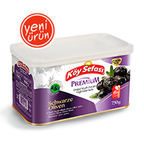
750 Gr Dose Gemlik In Lake SCHWARZE OLIVEN Premium
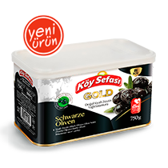
750 Gr Dose Gemlik In Lake SCHWARZE OLIVEN Gold
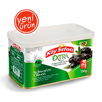
750 Gr Dose Gemlik In Lake SCHWARZE OLIVEN Extra
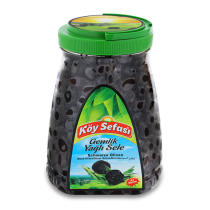
1500 Gr Gemlik Sele SCHWARZE OLIVEN
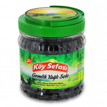
700 Gr Gemlik Sele SCHWARZE OLIVEN
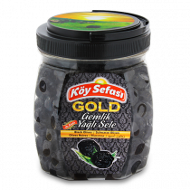
800 Gr Gemlik Gold Sele SCHWARZE OLIVEN
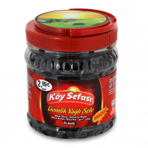
700 Gr Gemlik Wirtschaftlich Sele SCHWARZE OLIVEN
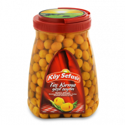
1500 Gr Stein Geschlagen GRÜNE OLIVEN
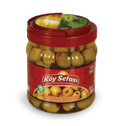
700 Gr mit Paprika GRÜNE OLIVEN
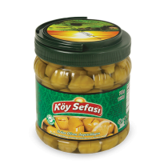
700 Gr Geschlagen GRÜNE OLIVEN
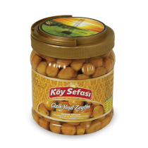
700 Gr Angesch GRÜNE OLIVEN
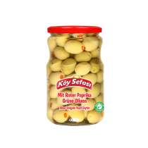
650 Gr Dose mit Paprika GRÜNE OLIVEN
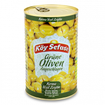
700 Gr Dose Geschlagen GRÜNE OLIVEN
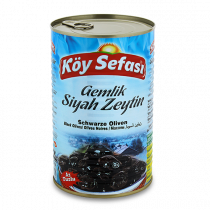
800 Gr Dose Gemlik Weniger Salzig SCHWARZE OLIVEN
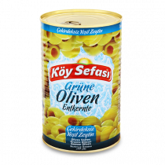
650 Gr Dose Kernlos GRÜNE OLIVEN
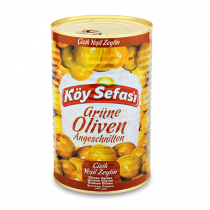
700 Gr Dose Angesch GRÜNE OLIVEN
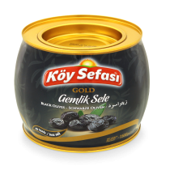
1500 Gr Fass Gemlik Sele SCHWARZE OLIVEN
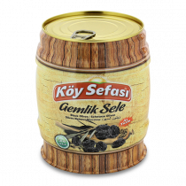
750 Gr Fass Gemlik Sele SCHWARZE OLIVEN
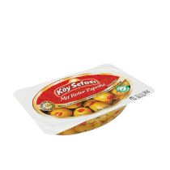
200 Gr Vakuum mit Paprika GRÜNE OLIVEN
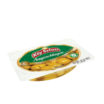
200 Gr Vakuum Geschlagen GRÜNE OLIVEN
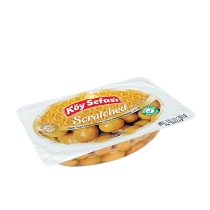
200 Gr Vakuum Angesch GRÜNE OLIVEN
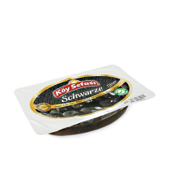
200 Gr Vakuum Gemlik Sele SCHWARZE OLIVEN
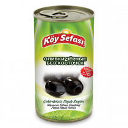
150 Gr Dose Kernlos SCHWARZE OLIVEN
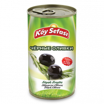
170 Gr Dose SCHWARZE OLIVEN
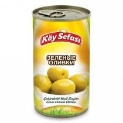
170 Gr Dose Cocktail GRÜNE OLIVEN
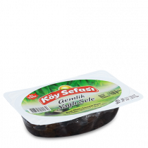
200 Gr Vakuum Gemlik Mit Sauce Sele SCHWARZE OLIVEN
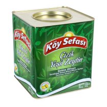
9 Kg mit Paprika GRÜNE OLIVEN
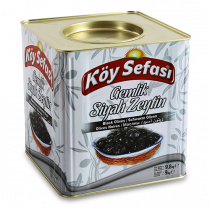
9 Kg Mega Sele SCHWARZE OLIVEN
9 Kg Geschlagen GRÜNE OLIVEN
9 Kg Angesch GRÜNE OLIVEN
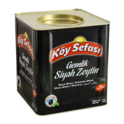
9 Kg In Lake Mega Gemlik SCHWARZE OLIVEN
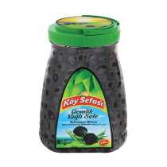
1000 Gr Gemlik Sele SCHWARZE OLIVEN
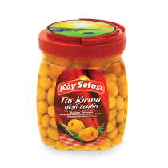
700 Gr Stein Geschlagen GRÜNE OLIVEN
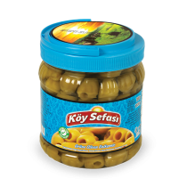
700 Gr Kernlos GRÜNE OLIVEN
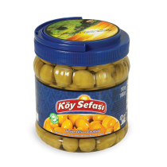
170 Gr Cocktail GRÜNE OLIVEN
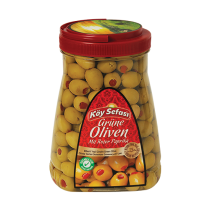
1300 Gr mit Paprika GRÜNE OLIVEN
1100 Gr Kernlos GRÜNE OLIVEN
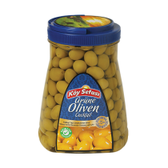
1350 Gr Cocktail GRÜNE OLIVEN
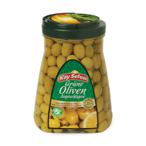
1350 Gr Geschlagen GRÜNE OLIVEN
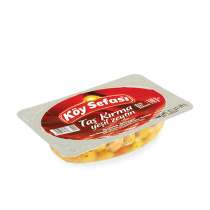
170 Gr Stein Geschlagen GRÜNE OLIVEN
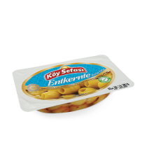
150 Gr Kernlos GRÜNE OLIVEN
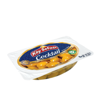
170 Gr Cocktail GRÜNE OLIVEN
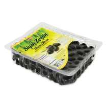
700 Gr Natürlich fermentierte SCHWARZE OLIVEN Luxes
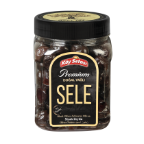
Natürlich fermentierte SCHWARZE OLIVEN Wirtschaftlich Sele
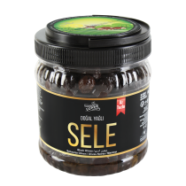
Natürlich fermentierte SCHWARZE OLIVEN Wirtschaftlich Sele
mit Paprika GRÜNE OLIVEN
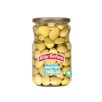
Kernlos GRÜNE OLIVEN
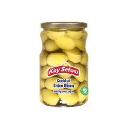
Cocktail GRÜNE OLIVEN
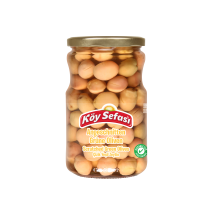
Angesch GRÜNE OLIVEN
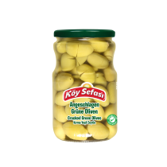
Geschlagen GRÜNE OLIVEN
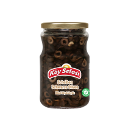
Geschnitten SCHWARZE OLIVEN
Geschnitten GRÜNE OLIVEN
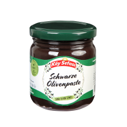
SCHWARZE OLIVEN Olivepasten
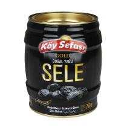
Natürlich fermentierte SCHWARZE OLIVEN Sele
Natürlich fermentierte SCHWARZE OLIVEN Sele
Home
Produkte
Produktion
Unternehmen
Kontakt
2015 ® Alle Rechte vorbehalten.